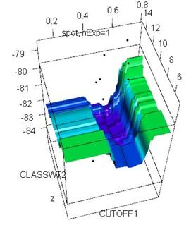

The TDMR Package:
Tuned Data Mining in R
Wolfgang Konen, Patrick Koch
Cologne University of Applied Sciences
Last update: May 2012
Contents
The TDMR Package: Tuned Data Mining in R
Phase 2: Tuned Data Mining in R (TDMR)
Phase 3: “The Big Loop”: Several TDMs with Unbiased Evaluations
TDMR Data Reading and Data Split in Train / Validation / Test Data
Training / Validation / Test Set
TDMR parallel computing concept
Environment envT for parallel mode
Phase 2: SPOT tuning on task SONAR
Phase 3: “The Big Loop” on task SONAR
Details on TDMR parallel computing concept
How to add a new tuning variable
Using TDMR
Overview
The TDMR framework is written in R with the aim to facilitate the training, tuning and evaluation of data mining (DM) models. It puts special emphasis on tuning these data mining models as well as simultaneously tuning certain preprocessing options. TDMR is especially designed to work with SPOT [Bart10e] as the preferred tuner, but it offers also the possibility to use other tuners, e.g., CMA-ES [Hans06], LHD [McKay79] or direct-search optimizers [BFGS, Powell] for comparision.
This document
· gives a short overview over the TDMR framework,
· explains some of the underlying concepts and
· shows example usages: how to use TDMR on new data mining tasks.
This document concentrates more on the software usage aspects of the TDMR package. For a more scientific discussion of the underlying concepts and the results obtained, the reader is referred to [Kone10a, Kone11b].
Installing TDMR
Once you have R (http://cran.r-project.org/), > 2.14, up and running, simply install TDMR with
|
> install.packages("TDMR"); > library(TDMR); |
TDMR Workflow
Phase 1: DM without Tuning
Two kinds of DM tasks, classification or regression, can be handled.
For each DM task TASK, create one task-specific function main_TASK(opts=NULL), as short as possible. If called without any parameter, main_TASK() should set default parameters for opts via tdmOptsDefaultsSet(). main_TASK() reads in the task data, does the preprocessing if necessary and then calls with the preprocessed data dset the task-independent functions tdmClassifyLoop or tdmRegressLoop, which in turn call the task-independent functions tdmClassify or tdmRegress.
A template may be copied from inst/demo02sonar/main_sonar.r.
[Here and in the following inst/ refers to the directory where
the package TDMR is installed. Use .find.package(“TDMR”) to locate this directory.] The template is invoked with
|
result <- main_sonar(); |
See Sec. “Example Usage” (Phase 1) for a complete example.
See Table 3 for an overview of elements in list result.
Phase 2: Tuned Data Mining in R (TDMR)
A TDMR task consists of a DM task (Phase 1) plus a tuner configuration (decision which parameters to tune within which ROI, which meta parameters to set for the tuner, …).
It is recommended to create for each DM task TASK a separate subdir. In this subdir the files shown in Table 1 have to be created for each tuner configuration (each TDMR task). In the case of SPOT as a tuner, this may look like:
Table 1: Configuration files for a SPOT run
|
.apd |
problem design: all opts-settings |
|
.roi |
SPOT ROI file, specifies which parameters to tune in which ROI |
|
.conf |
SPOT configuration file, usually with alg.func = "tdmStartSpot". Furthermore, io.apdFileName and io.roiFileName should specify the two files above. |
Templates for these three files may be copied from inst/demo02sonar/sonar_01.*.
The whole SPOT tuning can be started with demo/demo02sonar.r:
|
demo(demo02sonar,ask=F); |
This script will define a main_TASK in tdm$mainFunc, reads the .apd file and calls SPOT. SPOT reads the .conf file, calls the generic function tdmStartSpot(spotConfig), which finally executes tdm$mainFunc.
The only requirement on tdm$mainFunc is that it returns in
result$y
a suitable quantity to be minimized by SPOT.
If spot.fileMode==T, SPOT will generate .des and .aroi files (needed by SPOT internally) and the output files .bst and .res.
If spot.fileMode==F, tdmStartSpot will read the design from spotConfig$alg.currentDesign and it writes the .res data frame onto spotConfig$alg.currentResult.
See Sec. “Example Usage” (Phase 2) for the complete example.
Phase 3: “The Big Loop”: Several TDMs with Unbiased Evaluations
“The Big Loop” is a script to start several Phase-2-TDMR tasks (usually on the same DM task), optionally with several tuners (see here for a list of tuners) and compare their best solutions with different modes of unbiased evaluations, e.g. on unseen test data (tdm$umode = ”TST”) or by starting a new, independent CV (tdm$umode = “CV”) or by starting a new, independent re-sampling (tdm$umode = “RSUB”).
To start the Big Loop, only one script file has to be created in the user directory. A template may be copied from demo/demo03sonarr.
It is invoked with
|
demo(demo03sonar,ask=F); |
This will specify in runList the list of TDMR tasks and a list of tuners. For each TDMR task and each tuner
(a) the tuning process is started (if spotStep=”auto”) or a previous tuning result is read in from file (if spotStep=”rep”) and
(b) one or more unbiased evaluations are started. This is to see whether the result quality is reproducible on independently trained models and / or on independent test data.
The result is a data frame theFinals with one row for each TDMR task / each tuner and several columns measuring the success of the best tuning solution in different unbiased evaluations, see Table 2. The data frame theFinals is written to tdm$finalFile.
More detailed results are returned in the environment envT.
See Sec. “Example Usage” (Phase 3) for the complete example.
See Sec. "Environment envT" for more details on envT.
TDMR Experiment Concept
TDMR Phase 3 (“The Big Loop”) allows
(a) to conduct experiments, where different .conf files, different tuners, different unbiased evaluations, … are tried on the same task;
(b) to repeat certain experiments of kind (a) multiple times with different seeds (tdm$nExperim>1).
Each TDMR experiment consist of three parts:
Model building:
· During model building (training) and tuning the user starts with a data set, which is partitioned into training and validation set.
· The relative gain achieved on the validation set acts as performance measure for the tuning process.
· In the case of opts$TST.kind=“cv” or in the case opts$NRUN>1 multiple models are build, each with its own training and validation set. In this case multiple relative gains are averaged to get the performance measure for the tuning process.
Tuning:
· The above model building process is started several times with different model parameters and preprocessing parameters (design points). The tuning process uses the performance measure returned to guide the search for better parameters.
· As a result of the tuning process, a best parameter set is established. It has a certain performance measure attached to it, but this measure might be too optimistic (e.g. due to validation data being used as training data in a prior tuning step or due to extensive search for good solutions in a noisy environment)
Unbiased Evaluation (Test):
· Once a best parameter set is established, an unbiased performance evaluation is recommended.
· This evaluation is done by calling unbiasedRun() with one or several values for parameter umode. The values are in tdm$umode (a vector). The possible choices for tdm$umode are explained in Sec. "Training / Validation / Test Set".
· If tdm$nrun>1, for each value in tdm$umode multiple calls to unbiasedRun() are issued. The performance measure returned is the average over all runs.
Table 2: Elements of data frame finals
|
Description |
Condition |
|
|
|
||
|
CONF |
the base name of the .conf file |
|
|
TUNER |
the value of tdm$tuneMethod |
|
|
{PARAMS} |
all tuned parameters appearing in .roi file |
if tdm$withParams==T |
|
NEVAL |
tuning budget, i.e. # of model evaluations during tuning (rows in data frame res) |
|
|
RGain.bst |
best solution (RGain) obtained from tuning |
|
|
RGain.avg |
average RGain during tuning (mean of res$Y) |
|
|
|
||
|
NRUN |
# of runs with different test & train samples in unbiasedBestRun_*.r or # of unbiased CV-runs. Usually NRUN = tdm$nrun, see fct map.opts in tdmMapDesign.r. |
|
|
RGain.OOB |
mean OOB training error (averaged over all unbiased runs) |
if opts$method = *.RF |
|
sdR.OOB |
std. dev. of RGain.OOB |
if opts$method = *.RF |
|
RGain.TRN |
mean training error (averaged over all unbiased runs) |
if opts$method ¹ *.RF |
|
sdR.TRN |
std. dev. of RGain.TRN |
if opts$method ¹ *.RF |
|
RGain.RSUB |
mean test RGain (test set = random subsample) |
if tdm$umode has “RSUB” |
|
sdR.RSUB |
std. dev. of RGain.RSUB (averaged over all unbiased runs) |
if tdm$umode has “RSUB” |
|
RGain.TST |
mean test RGain (test set = separate data, user-provided) |
if tdm$umode has “TST” |
|
sdR.TST |
std. dev. of RGain.TST (averaged over all unbiased runs) |
if tdm$umode has “TST” |
|
RGain.CV |
mean test RGain (test set = CV, cross validation with tdm$nfold CV-folds |
if tdm$umode has “CV” |
|
sdR.CV |
std. dev. of RGain.CV (averaged over all unbiased runs) |
if tdm$umode has “CV” |
More details:
· Each experiment of kind (a) initially deletes file tdm$finalFile, if it exists, and then writes for each combination {.conf file, tuner} it encounters a line to tdm$finalFile (usually a file with suffix .fin). This line is a one-row data frame finals which is built in unbiasedBestRun_C.r (classification) and contains the columns listed in Table 2.
· In the case of regression experiments (unbiasedBestRun_R.r) each “RGain” has to be replaced by “RMAE” in the table above, see here for further explanation.
· If tdm$experFile is not NULL, then the same one-row data frame finals is also appended to the file tdm$experFile. Usually, tdm$experFile is a file with .exp as suffix. This file is never deleted by the TDMR system, only the user may delete it. tdm$experFile serves the purpose to accumulate experiments carried out multiple times (with different random seeds). This multiple-experiment execution may be done either directly, within one ‘big-loop’ experiment, if tdm$nExperim>1, or it may be done subsequently by the user when starting demo03sonar.r again at a later point in time with the same tdm$experFile defined.
· An .exp file can be analyzed with scripts like exp_summ.r in TDM.SPOT.d/appAcid/.
TDMR Data Reading and Data Split in Train / Validation / Test Data
Data Reading
TDMR reads the task data from opts$filename and optionally also from opts$filetest, if opts$READ.TST=TRUE.
It is recommended to read the data prior to tuning with the setting opts$READ.INIT=TRUE (the default) and using opts$READ.CMD. If opts$READ.CMD is not defined, the default is:
"read.csv(file=paste(opts$dir.txt,
filename, sep=\"\"), nrow=opts$READ.NROW)"
which includes the defaults header=TRUE, sep=",", dec=".".
Then TDMR will read the data into dset at the beginning of tdmCompleteEval with
dset <- tdmReadData(opts);
and let the function tdmReadData do the read work (including the options opts$READ.CMD, opts$READ.TST, READ.TXT and READ.NROW). dset is passed on with main_TASK(…, dset=dset).
For downward compatibility and for special cases it is also possible to set opts$READ.INIT=FALSE, then dset=NULL and the data reading is done in main_TASK, for each tuning step anew.
TODO: add an example readZZZ function
Training / Validation / Test Set
In data mining we know three kind of data or data sets:
1. Training set: the data for learning or model training.
2. Validation set: the data used to obtain a performance measure of the trained model. The performance on the validation data is used to guide the tuning process.
3. Test set: When training and tuning is finished, we build a final model. To estimate the quality of the model for new data, we test its performance on test data. Usually, the test data were not seen by the model or the tuner. The user should NOT use the performance on the test data in any way to tune the model further.
Usually, the split into test set on the one side and training/validation set on the other side is done once prior to the tuning process. During tuning, many tuning steps are possible, each containing at least one model training and each step may have a new separation of the training/validation set into a training part and a validation part.
How can we split the data into test set and training/validation set (which we will abbreviate with TrnVaSet in the following)? – TDMR offers three options here, where options 2 and 3 require opts$READ.INI=TRUE [the value in brackets denotes the choice for tdm$umode]:
1.
Test set is part of TrnVaSet [”RSUB” or ”CV”]. The whole data is used for
training/validation and later also as the reservoir from which the test set
sample is drawn. This is NOT the recommended option since the test set is
already visible during training and tuning, but sometimes you may have only
very few data and cannot afford to set test data aside.
To use this option, set tdm$umode=”RSUB”
or tdm$umode=”CV”. In case ”RSUB”
set tdm$tstFrac to the desired random fraction to be drawn
from the whole data (default is 20%). In case ”CV” set tdm$nfold
to the desired number of CV folds (default is 5).
2.
User-defined test set splitting [”TST”]. Here we allow two sub-options: (a) The train/validation data TrnVaSet
is in opts$filename and the test data are in opts$filetest. TDMR reads both and
adds a new column opts$TST.COL to the data frame dset with ‘0’ for TrnVaSet and
‘1’ for test data. (b) The user provides one data frame dset containing already
a column opts$TST.COL with the appropriate ‘0’s and ‘1’s.
In either way, the splitting is coded in the column dset[,opts$TST.COL] with
‘0’ for all records belonging to TrnVaSet and ‘1’ for test data.
To use option (a), set tdm$umode=”TST” and opts$READ.TST=TRUE . Have opts$filetest and opts$TST.COL set to meaningful string
values.
To use option (b), set tdm$umode=”TST”
and opts$READ.TST=FALSE. The string opts$TST.COL has to name a column of the data frame
read which contains already the appropriate ‘0’s and ‘1’s.
3.
TDMR sets a random fraction of the data aside
for testing [”SP_T”]. This is done once before the tuning
starts. The test set (the data set aside for testing) is used only in the
unbiased evaluation. The whole procedure can be repeated (if tdm$nExperim>1)
and another random test set is set aside.
This is the recommended option, it has a completely independent test set
and allows to assess the variability due to varying test set selection.
To use this option, set tdm$umode=”SP_T”
and opts$TST.testFrac to the desired random fraction to be set aside (default is 10%).
The splitting is coded in the column dset$tdmSplit with ‘0’ for all records
belonging to TrnVaSet and ‘1’ for test data.
Set tdm$SPLIT.SEED=<number> if you want reproducible splits (but varying for each experiment which has a different <number>).
With each of these choices for tdm$umode, the following happens during unbiased evaluation: A “fresh” model is build using all data in TrnVaSet for training. Then this model is evaluated on the test data and the performance (relative gain) on these test data is an unbiased estimator of the model’s performance on new data.
How can we further split TrnVaSet into training set and validation set? – TDMR offers again three options here, which are distinguished by the value of opts$TST.kind:
1. ”rand” = Random Subsampling: Sample a fraction opts$TST.valiFrac from TrnVaSet and set it aside for validation. Use the rest for training, if opts$TST.trnFrac is not defined. If opts$TST.trnFrac is defined (and if it is ≤ 1-opts$TST.valiFrac, otherwise error), then use only a random fraction opts$TST.trnFrac from TrnVaSet for training.
2. ”cv” = Cross Validation: Split TrnVaSet into opts$TST.nfold folds and use them for cross validation.
3. ”col” = User-Defined Column: All records with a ‘0’ in column opts$TST.COL are used for training, the rest for validation.
The split into training and validation data is done in tdmClassifyLoop, i.e. for each call of main_TASK.
“col” in combination with tdm$umode=”TST” above is normally NOT recommended (the same data are specified for test set and validation set). But it is o.k. in the special case of opts$MOD.method =”RF” or =“MC.RF” (Random Forest): Then the validation data are in fact never used, since RF uses as validation measure the OOB on the training data.
Examples
|
opts$READ.INI=TRUE |
Read the data prior to tuning, with train-set from dmc2010_train.txt, test set from dmc2010_test.txt. This is coded with ‘0’ and ‘1’ in column TST of the data frame dset . With opts$TST.kind=”col” we specify that all TST==0 data are used for training. The model RF (Random Forest) needs no validation data, since the performance measure is “OOB on the training set”. |
|
opts$READ.INI=TRUE opts$TST.nfold=5 |
Read the data prior to tuning from sonar.txt, split them by random subsampling: 15% into test set and 85% into train+validation set. This is coded with ‘0’ and ‘1’ in column “tdmSplit” of data frame dset . During tuning, the train+validation set is further split by cross validation with 5 folds (new split in each tuning step). The unbiased run uses all 85% train+validation data for training and reports the performance on the 15% test set data. |
Details:
· opts$TST.kind=”rand” triggers random resampling for the division of dset into training and test set. In the case of classification this resampling is done by stratified sampling: each level of the response variable appears in the training set in proportion to its relative frequency in dset, but at least with one record. This last condition is important to ensure proper functioning also in the case of ‘rare’ levels (most DM models will crash if a certain level does never appear in the training set). In the case of regression the sample is drawn randomly (without stratification).
TDMR Important Variables
Table 3: Overview of important variables in TDMR
lastRes: The items last* are specific for the *last* model (the one built for the last response variable in the last run and the last fold).
Variable opts
opts is a long list with many parameters which control the behaviour of main_TASK, i.e. the behaviour of Phase 1. To give this long list a better structure, the parameters are grouped with key words after “opts$” and before “.” (see Table 3 above).
There are some other parameters in opts which do not fall in any of the above groups, e.g.
· opts$NRUN
· opts$VERBOSE
and others.
You might either specify all opts-parameters in your application (i.e. main_TASK.r or *.apd) or you might use tdmOptsDefaultsSet() and specify only those of the opts-parameters which differ from this defaults or you enter main_TASK.r with a partially filled opts and leave the rest to function tdmFillOptsDefaults (in tdmOptsDefaults.r), which is called from main_TASK after the user’s opts-settings (because some settings might depend on these settings of the user).
Details:
·
For ‘type safety’, every
object opts should be created as
opts = tdmOptsDefaultsSet()
and not with opts = list().
· If the list opts is extended by element X in the future, you need only to add a default specification of opts$X in function tdmOptsDefaultsSet, and all functions called from main_TASK will inherit this default behaviour.
· tdmOptsDefaultsSet calls finally the internal function tdmOptsDefaultsFill(opts) , and this fills in further defaults derived from actual settings of opts (e.g. opts$LOGFILE is an element which is derived from opts$filename as <opts$filename>.log).
TDMR RGain Concept
For classification: The R_-elements (i.e. result$R_train and result$R_test) can contain different performance measures, depending on the value of opts$rgain.type:
- “rgain” or NULL [def.]: the relative gain in percent, i.e. the total gain actually achieved divided by the maximal achievable gain on the given data set,
- “meanCA”: mean class accuracy: For each class the accuracy (1 – error rate) on the data set is calculated and the mean over all classes is returned,
- “minCA”: same as “meanCA”, but with min instead of mean. For a two-class problem this is equivalent to maximizing the min(Specifity,Sensitivity) (see here).
The total gain is defined as the sum of the pointwise product gainmat*confmat. Here confmat is the confusion matrix (actual vs. predicted cases) and gainmat is the gain associated with each possible outcome.[1]
For binary classification there are additional options for opts$rgain.type, based on package ROCR [Sing05]:
- "arROC": area under ROC curve (a number in [0,1]),
- "arLIFT": area between lift curve and horizontal line 1.0,
- "arPRE": area under precision-recall curve (a number in [0,1]).
In each classification case, TDMR seeks to minimize “–result$R_train”, i.e. to maximize result$R_train.
For regression: The R_‐elements (i.e. result$R_train and result$R_test) can contain different things, depending on the value of opts$rgain.type:
- “rmae” or NULL [def.]: the relative mean absolute error RMAE, i.e. the mean <|y – y(pred)|> divided by the mean <|y|>,
- “rmse”: root mean square error.
In each regression case, TDMR seeks to minimize result$R_train.
Environment envT
The environment envT is used for several purposes in TDMR
· to report results from a call to tdmCompleteEval (Phase 3) back to the user
· to communicate information between different parts of TDMR
· to pass necessary information to and back from the parallel slaves, see Section Environment envT for parallel mode
Environment envT is constructed in tdmCompleteEval, with some elements filled in later by other functions. Table 4 shows the elements of envT and it shows in the 3rd column which function adds these elements to envT:
Table 4: Elements of environment envT
|
variable |
remark |
function |
|
bst |
data frame with contents of last .bst file |
tdmStartOther or spotTuner, lhdTuner |
|
bstGrid |
list with all bst data frames, bstGrid[[k]] retrieves the kth data frame |
tdmCompleteEval or populateEnvT |
|
getBst(conf,tuner,n) |
function returning from bstGrid the bst data frame for configuration file conf, tuning method tuner and experiment n |
tdmCompleteEval |
|
res |
data frame with contents of last .res file |
tdmStart* or tdmCompleteEval |
|
resGrid |
list with all res data frames, resGrid[[k]] retrieves the kth data frame |
tdmCompleteEval or populateEnvT |
|
getRes(conf,tuner,n) |
function returning from resGrid the res data frame for configuration file conf, tuning method tuner and experiment n |
tdmCompleteEval |
|
result |
list with results of tdm$mainFunc as called in the last unbiased evaluation, see Table 3 |
unbiasedRun |
|
theFinals |
data frame with one row for each res file, see Table 2 |
tdmCompleteEval or populateEnvT |
|
tdm |
see Table 3 |
tdmCompleteEval |
|
tunerVal |
the value of tdmDispatchTuner (which can be a long list in case of SPOT) |
tdmDispatchTuner |
|
spotConfig |
|
tdmCompleteEval |
|
runList |
runList |
tdmCompleteEval |
envT is used to pass information back and forth between different functions of TDMR, where envT$ sCList[[k]]$opts and envT$tdm pass info into tdmStart*, while envT$res and envT$bst are used to pass info back from tdmStart* to the main level.
Note that the variable opts with various settings for the DM process is returned in several variables of envT:
· envT$result$opts, envT$result$lastRes$opts, envT$tunerVal$opts, envT$spotConfig$opts and envT$sCList[[k]]$opts.
TDMR parallel computing concept
How to use parallel computing
TDMR supports parallel computing through the packages snow and snowfall [Knaus08, Knaus09]. Parallelization of TDMR’s phase-3-tasks is very easy, you simply have to set tdm$parallelCPUs to a suitable value >1. This will invoke the sfApply-mechanism of snowfall.
Note that a certain sfApply will try to spawn always tdm$parallelCPUs processes, but if the last process(es) are less than this number, sfApply will wait for the slowest to complete before the next sfApply takes over. So it is a good idea to bundle as many processes as possible into one sfApply, if you want an even load distribution over time.
But on the other hand, it has also advantages to send several tdmCompleteEval’s because every such call will have its own envT, which is saved on its own .RData at the end of function tdmCompleteEval and so the intermediate results are preserved, even if the parallel cluster should crash.
Environment envT for parallel mode
The environment envT is used to pass necessary information to and back from the parallel slaves. It replaces in nearly all cases the need for file reading or file writing. (File writing is however still possible for the sequential case or for parallel slaves supporting file access. File writing might be beneficial to trace the progress of parallel or sequential tuning processes while they are running and to log the resulting informations.)
See Environment envT and Table 4 for more information on envT .
Example Usage
The usage of the TDMR workflow is fairly easy. We show it for the three workflow phases and for the example of the SONAR classification task.
Phase 1: DM on task SONAR
If you want to build a DM classification model for the SONAR data (see UCI repository or package mlbench for further info on SONAR), you write a file main_sonar.r [2]:
|
main_sonar <- function(opts=NULL, dset=NULL) { tdmPath <- "../tdm"; source(paste(tdmPath,"source.tdm.r",sep="/")); source.tdm(tdmPath);
if (is.null(opts)) { opts = tdmOptsDefaultsSet(); # set initial defaults for many elements of opts. See tdmOptsDefaults.r # for the list of those elements and many explanatory comments opts$filename = "sonar.txt" opts$READ.CMD = "read.csv2(file=paste(opts$dir.data, filename, sep=\"\"), header=FALSE)" opts$data.title <- "Sonar Data" } opts <- tdmOptsDefaultsSet(opts); # fill in all opts params which are not yet set (see tdmOptsDefaults.r)
gdObj<-tdmGraAndLogInitialize(opts); # init graphics and log file
#=============================================== # PART 1: READ DATA #=============================================== if (is.null(dset)) { cat1(opts,opts$filename,": Read data ...\n") dset <- tdmReadData(opts); } names(dset)[61] <- "Class" # 60 columns V1,...,V60 with input data, # one response column "Class" with levels ["M" (metal) | "R" (rock)]
# which variables are input variables (in this case all others): input.variables <- setdiff(names(dset), c(response.variable))
#=============================================== # PART 2: Model building and evaluation #=============================================== result <- tdmClassifyLoop(dset,response.variable,input.variables,opts);
# print summary output and attach certain columns (here: y, sd.y, dset) to list result: result <- tdmClassifySummary(result,opts,dset);
tdmGraAndLogFinalize(opts,gdObj); # close graphics and log file
result; } |
|
|
This function is invoked with
|
result <- main_sonar(); |
or alternatively with
|
demo(demo00sonar,ask=F); |
In the first case, the control flow will pass through the branch if (is.null(opts)), in the second case demo00sonar.r will define opts and pass it to main_sonar(). In either case, tdmOptsDefaultsSet() will construct a default list opts. You need to specify only those things which differ from tdmOptsDefaultsSet(): in this case the filename of the SONAR dataset. Since you do not specify anything else, an RF model will be built and The dataset will be divided in a training part (90%) and test part (10%), based on opts$TST.kind=”rand”, opts$TST.frac=0.1. Since you do not specify anything from the opts$SRF-block, you use the default SRF variable ranking (opts$SRF.kind =”xperc”, opts$SRF.Xperc=0.95). This means that the most important columns containing about 95% of the overall importance will be selected.
You need to specify in main_sonar.r what column in dset is response variable (classification target) and what columns are used for input (in this case all the others, because the SONAR dataset does not have ID columns or otherwise irrelevant columns).
Function tdmClassifyLoop() is started, it builds an RF model using the training data and evaluates it on training and validation data.
The object result of class TDMclassifier is explained in more detail in Table 3.
Some of the graphics output generated by tdmClassify:
|
Figure 1: RF-based variable importance for task sonar. |
Figure 2: True/false classification for the two classes M and R of task sonar. |

The two plots in Figure 1 show the RF-based importance, where MeanDecreaseAccuracy, which has V9, V11 and V12 as the most important variables, is the more reliable measure. The right plot in Figure 2 shows the true/false classifications on the test set (which is here however rather small, so the results are not very reliable, a more reliable test set classification would be obtained with CV).
Phase 2: SPOT tuning on task SONAR
If you want to do a SPOT tuning on task SONAR, you should follow the steps described in TDMR Workflow, Phase 2 and create the three small files sonar.conf, sonar.apd and sonar.roi. The files’ content may look for example like this:
sonar_01.conf:
alg.func = "tdmStartSpot"
alg.resultColumn = "Y"
alg.seed = 1235
io.apdFileName = "sonar_01.apd"
io.roiFileName = "sonar_01.roi"
io.verbosity = 3;
auto.loop.steps = 50; # number of SPOT’s sequential generations
auto.loop.nevals = 100; # concurrently, max number of algo evaluations may be specified
init.design.func = "spotCreateDesignLhd";
init.design.size = 10; # number of initial design points
init.design.repeats = 1; # number of initial repeats
seq.merge.func <- mean;
seq.design.size = 100;
seq.design.retries = 15;
seq.design.maxRepeats = 2;
seq.design.oldBest.size <- 1;
seq.design.new.size <- 3;
seq.predictionModel.func = "spotPredictRandomForest";
report.func = "spotReportSens"
sonar_01.apd:
opts = tdmOptsDefaultsSet(); # set initial defaults for many elements of opts.
opts$filename = "sonar.txt"
opts$data.title <- "Sonar Data"
opts$READ.CMD = "read.csv2(file=paste(opts$dir.txt, filename, sep=\"\"), dec=\".\", sep=\",\", nrow=opts$READ.NROW,header=F)"
opts$RF.mtry = 4
opts$NRUN = 1 # how many runs with different train & test samples - or -
# how many CV-runs, if TST.kind="cv"
opts$GRAPHDEV="non";
opts$GD.RESTART=F;
opts$VERBOSE= opts$SRF.verbose = 0;
sonar_01.roi:
name low high type
CUTOFF1 0.1 0.80 FLOAT
CLASSWT2 5 15 FLOAT
XPERC 0.90 1.00 FLOAT
The three parameter CUTOFF1, CLASSWT2 and XPERC are tuned within the borders specified by sonar_01.roi. Usually you should set opts$GRAPHDEV=”non” and opts$GD.RESTART=F to avoid any graphic output and any graphics device closing from main_sonar.r, so that you get only the graphics made by SPOT.
After this preparation, the SPOT tuning is started with demo/demo02sonar.r:
|
path <- paste(.find.package("TDMR"), "demo02sonar",sep="/"); oldwd <- getwd(); setwd(path); tdm=tdmDefaultsFill(mainFile="main_sonar.r");
source("sonar_01.apd"); # read in opts-settings source(tdm$mainFile); spotUserConfig = list(tdm=tdm,spot.fileMode=F, opts=opts); spotConfig = spot("sonar_01.conf","auto",spotConfig=spotUserConfig);
|

It will generate the usual SPOT result files (see SPOT manual [Bart10e])
- sonar_01.res
- sonar_01.bst
The tuning will stop after 16 sequential steps with the configuration CONFIG=58, because the budget of auto.loop.nevals=100 evaluations is exhausted. The best solution can be seen from the last line of sonar_01.bst (or alternatively from the printout of spotConfig$alg.currentBest).
With
|
spot(“sonar_01.conf”,”rep”); |
the results from a prior tuning run producing sonar_01.res are read in again and a report including a sensitivity plot (see Figure 3) is made.
The sensitivity plot shows the response of the metamodel in the vicinity of the best solution. Consider for example the black line (CUTOFF1) in Figure 3: This line is produced by fixing the other parameters (CLASSWT2, XPERC) at their best-solution values (green and red dot) and varying CUTOFF1 within its ROI-interval [0.10, 0.80], which is mapped to the normalized abscissa [-1.0, 1.0] in the plot. The black line is the response of the metamodel. The best-solution value of CUTOFF1 is the black dot. The steep valley of the black line around the black dot shows that the metamodel is quite sensitive to CUTOFF1.
See Sec. "Details for Phase 2 Example" for more details
Phase 3: “The Big Loop” on task SONAR
To start “The Big Loop”, you configure a file similar to demo/demo03sonar.r:
|
path <- paste(.find.package("TDMR"), "demo02sonar",sep="/"); oldwd <- getwd(); setwd(path); source("main_sonar.r"); # in working dir
tdm <- list( mainFunction="main_sonar" , umode=c("RSUB") # ["CV" | "RSUB" | "TST"] , tuneMethod = c("spot","lhd") , filenameEnvT="demoSonar.RData" # file to save environment envT (in working dir) , finalFile="sonar.fin" , nrun=5, nfold=2 # repeats and CV-folds for the unbiased runs , withParams=TRUE # list the columns with tuned parameters in final results , nExperim=2 , optsVerbosity = 0 # the verbosity for the unbiased runs ); tdm <- tdmDefaultsFill(tdm); ## runList could contain also more than one file (e.g. c("sonar_01.conf","sonar_02.conf")):. runList = c("sonar_04.conf"); ## spotStep can be either "auto" (do automatic tuning) or "rep" (make a visual report of best results) spotStep = "auto";
envT <- tdmCompleteEval(runList,NULL,spotStep,tdm);
setwd(oldwd); # restore old working directory |
demo03sonar.r specifies a vector of TDMR tasks in runList (a vector of .conf files), specifies a vector of tuners in tdm$tuneMethod, e.g. c(“spot”,“lhd”), sets other values of tdm and calls tdmCompleteEval.
Here, this script will trigger the following sequence of experiments:
- sonar_04.conf is started with tuner spot
- sonar_04.conf is started with tuner lhd
This sequence of 2 tuning experiments is repeated nExperim=2 times. The corresponding 4 result lines are written to tdm$finalFile. If (tdm$experFile != NULL), these lines are also appended to file tdm$experFile. The switch withParams=TRUE is only sensible if all .conf files have the same set of parameters in their .roi file.
The resulting data frame envT$theFinals (also written to file sonar.fin) contains:
|
CONF TUNER NEXP CLASSWT2 XPERC NRUN NEVAL RGain.bst RGain.avg RGain.OOB sdR.OOB RGain.RSUB sdR.RSUB sonar_02 lhd 1 12.026543 0.930197 3 36 86.70213 84.3676 84.4311 1.03715 83.73984 5.63268 sonar_02 spot 1 14.713475 0.981312 3 36 86.96809 84.6926 85.6287 1.03715 86.99187 7.04085 sonar_03 lhd 2 8.037636 0.954494 3 36 81.91489 78.6643 80.4391 1.82937 79.67480 7.45134 sonar_03 spot 2 7.375221 0.914740 3 35 81.91489 78.7082 78.8423 0.34571 74.79675 2.81634
|
Here CLASSWT2 and XPERC are the tuning parameters, the other columns are defined in Table 2.
In the case of the example above, the tuning process had a budget of NEVAL=36 model trainings, resulting in a best solution with class accuracy RGain.bst (in %). The average class accuracy (mean w.r.t. all design points) during tuning is RGain.avg. When the tuning is finished, the best solution is taken and NRUN=3 unbiased evaluation runs are done with the parameters of the best solution. Since the classification model in this example is RF (Random Forest), an OOB-error from the 3 trainings is returned, with average RGain.OOB and standard deviation sdR.OOB. Additionally, NRUN=3 trainings are done with random subsampling (RSUB) of the data set in training and test set, resulting in an average class accuracy on the test set RGain.RSUB and the corresponding standard deviation in sdR.RSUB.
Note that the standard deviation sdR.RSUB is in this case quite large (because the test set is very small). A more reliable result might be obtained with “CV” instead of “RSUB”.
See Sec. "Details for Phase 3 Example" for more details
Interactive Visualization
Once a phase-3 experiment is completed, the
return value envT from tdmCompleteEval() contains the result of such an experiment
and may be visually inspected. Alternatively, envT may be loaded from an
appropriate .RData file.The call
|
tdmPlotResMeta(envT); |
allows to visually inspect all RES data frames contained in envT.

The user interface is shown and explained in Figure 4. An additional combo box “confFile” appears only, if envT$runList has more than one element. An additional slider “nExper” appears only, if envT$tdm$nExperim>1.
|
|
|
|
Figure 5: Two example outputs from tdmPlotResMeta with reportFunc=spotReport3d. Left: modelFit = spotPredictGausspr, right: = spotPredictRandomForest. |
|

The user selects with “tuner”, “confFile” and “nExper” a certain RES data frame from envT. This data frame contains a collection of function evaluations for certain design points selected by the tuner. With one of the metamodel construction functions (see package SPOT for further details)
· spotPredictGausspr
· spotPredictRandomForest
· spotPredictMlegp
a metamodel is fitted to the RES data frame and the result is shown as shaded surface in the plot. The RES data points are shown as black points in Figure 5.
Since certain “bad” RES point may dominate the plot as outliers and hinder the user to inspect the region near the optimum, there are two options to suppress “bad” points:
1. If the slider nSkip has a value >0, then the nSkip RES data points with the worst y-value are discarded.
2. If the checkbox “Skip incomplete CONFIGs” is activated, then design points belonging to a configuration which was not evaluated maxRepeats times are discarded (relevant for SPOT only).
Note that both options will reduce the number of RES data points. This will also affect the metamodel fit, so use both options with care, if the number of RES data points is small.
The plots created with spotReport3d make use of the rgl-package. They can be interactively manipulated with the mouse. They can be selected and saved as PNG images with commands like
|
rgl.set(7); rgl.snapshot(“myFile.png”); |
A complete demo example is invoked with:
|
demo(demo05visMeta); |
Performance Measure Plots
With the help of package ROCR [Sing05],
several area performance measure can be used for binary classification. The
file demo/demo06ROCR.r shows an example:
|
setwd(paste(.find.package("TDMR"), "demo02sonar",sep="/")); source("main_sonar.r"); opts = tdmOptsDefaultsSet(); # ... opts$rgain.type <- "arROC"; result = main_sonar(opts); tdmGraphicNewWin(opts); cat("Area under ROC-curve for validation data set: "); print(tdmROCRbase(result)); # side effect: plot ROC-curve tdmGraphicNewWin(opts); cat("Area under lift curve for training data set: "); print(tdmROCRbase(result,dataset="training",typ="lift")); # side effect: plot lift chart |
|
|
 |
|
Figure 6: Left: ROC chart, right: lift chart, as produced by demo06ROCR.r with the help of package ROCR [Sing05]. The bar on the right side of each plot shows a color coding of the cutoff parameter. |
|

Once the variable result contains an object of class TDMclassifier, it is also possible to inspect such an object interactively and to plot ROC-, lift- or precision-recall-chart for the training set or the validation set:
|
tdmROCR(result); |
A twiddler interface for object result shows up, as shown in Figure 7, and allows to select between different performance measure plots:

TDMR for Developers
Details for Example Usage
Details for Phase 2 Example
When spot(“sonar_01.conf”,”auto”) is invoked, the following things happen:
·
SPOT is started, reads
from sonar_01.conf that it has to call the inner function
alg.func
= "tdmStartSpot".
· tdmStartSpot(spotConfig) gets with the elements tdm and opts of spotConfig the required information
tdm$mainFile <- "main_sonar.r";
tdm$mainFunc <- "main_sonar";
changes to the directory of tdm$mainFile (current dir in the case of this example) and invokes the DM template main_sonar.r to with command result <- main_sonar(opts,dset=dset).
·
Now tdm$mainFunc is
started and runs the data mining process. The DM template main_sonar is
provided by the user. The only requirement of SPOT or other tuners for the function
main_sonar is that it returns in
result$y
a suitable quantity to be minimized by SPOT.
More details:
· For a new task TASK, the opts-part of .apd can usually be copied from the opts-part of main_TASK.
· Usually, TASK_02.apd, TASK_03.apd, … will start with source(TASK_01.apd,local=T) and will only specify those elements of opts which need to be different.
· For reproducability of experiments each TDMR task should get its own task name TASK_01, TASK_02, … and the associated set of files (.apd, .conf, .roi …) should kept unchanged for further reference. DO NOT alter later the settings in a TDMR task file (unless you want to delete and overwrite the old experiment), but create a new TASK_xx with its own set of files.
· If a new parameter appears in a .roi file which never appeared in any other .roi file before, a line has to be added to tdmMapDesign.csv, specifying the mapping of this parameter to the corresponding element of opts. (more details here)
·
For the current TDMR
package version, SPOT is loaded from the CRAN package version, which has been
installed as library in the usual way. This is the case when tdm$theSpotPath is
either NA or NULL.
If you want to load SPOT from source files in pre-defined loacations (see source.tdm.R), set
tdm$theSpotPath <- “USE.SOURCE”;
If you want to load SPOT from your own source directory, set tdm$theSpotPath to
this directory.
· How does SPOT handle it, if confFile and spotConfig are both present, e.g. in a call spot(confFile,"auto",spotConfig):
- Initial defaults for all elements in spotConfig are set inside SPOT (see spotGetOptions.R).
- If confFile exists (only then!), it is read and settings found in confFile overwrite the defaults from spotGetOptions.R.
- If spot is called with parameter spotConfig present, then the elements found in this command line parameter overwrite the settings of step 2.
Details for Phase 3 Example
· At the beginning of demo03sonar.r we change to a directory where the .conf files in runList reside. The .conf files should be given w/o path (since TDMR will infer other files, e.g. sonar_01.apd, from it).
· spotList is a list of .conf files for which the tuners will be started (NULL for all from runList). If a tuner is not started for a certain .conf file it is assumed that its .bst file already exists from a prior run.
· spotStep is a list of strings (may be shorter than runList, then it is cyclically reused) which specifies the SPOT step to be invoked. If e.g. the step is “rep” (“report”), then it is assumed that the .bst file already exists.
Some more details for the developer:
· The unbiased evaluations are done for each element of tdm$umode by calling the function unbiasedRun(…,umode,…). The function unbiasedRun reads in the best solution of a tuning run from .bst file, performs a re-run (training + test) with these best parameters.
· demo03sonar.r in the form given above assumes that library TDMR is loaded. If you want instead to ‘source’ all necessary R-files from tdm$tdmPath (e.g. during development) OR if you want to prepare for parallel execution (more details …), then add the following lines after the definition of tdm to demo03sonar.r:
|
tdm$theSpotPath <- NA; start.tdm.path <- ifelse(is.null(tdm$tdmPath), .find.package("TDMR"),paste(tdm$tdmPath,"inst",sep="/")); source(paste(start.tdm.path,"start.tdm.r",sep="/"),local=T); |
This will locate the script start.tdm.r (either in the directory of library TDMR or in the sources) and execute it. In this way, demo03sonar.r can be started directly at the beginning of an R-session, w/o a prior require(TDMR). The line tdm$theSpotPath <- NA; means that SPOT is loaded as a package. If it specifies instead the path to the SPOT source, then SPOT’s R-files will be ‘sourced’ from there.
· demo03sonar.r starts the definition of list tdm. If some elements are not def’d, suitable defaults will be added later to tdm at the beginning of tdmCompleteEval with function tdmDefaultsFill(tdm).
TDMR Tuner Concept
How to use different tuners
If you want to tune a TDMR-task with two tuners SPOT and CMA-ES: Simply specify
tdm$tuneMethod = c(“spot”,”cmaes”)
in demo03sonar.r and set the variable spotStep to “auto”. The tuning results (.bst and .res files) will be copied into subdirs “spot” and “cmaes” of the directory to which we setwd at the start of demo03sonar.r.
Table 5: Tuners availabe in TDMR
|
tdm$tuneMethod |
Description |
|
spot |
Sequential Parameter Optimization Toolbox |
|
lhd |
Latin Hypercube Design (truncated SPOT, all budget for the initial step) |
|
cmaes |
Covariance Matrix Adaption ES (R-version) |
|
cma_j |
Covariance Matrix Adaption ES (Java-version) |
|
powell |
Powell’s Method (direct & local search) |
|
bfgs |
Broyden, Fletcher, Goldfarb and Shannon method (direct & local search) |
It is recommended to use tuner cma_j only with option tdm$fileMode=FALSE, otherwise it might not work on every OS platform.
How to integrate new tuners
Originally TDMR was only written for SPOT as tuning method.
In November 2010, we started to add other tuners to aid the comparision with SPOT on the same footing. As the first other tuner, we introduced CMA-ES (Niko Hansen, R-package by Olaf Mersmann and others). Since comparision with SPOT is the main issue, CMA-ES was wrapped in such a way in tdmDispatchTuner.r that the behaviour and output is very similar to SPOT.
This has the following implications which should also be obeyed when adding other tuners to TDMR:
· Each tuning method has a unique name (e.g. “spot”, “cmaes”): this name is an allowed entry for tdm$tuneMethod and finals$TUNER and it is the name of a subdir in TDM.SPOT.d/TASK/.
· Each tuner writes result files (.bst, .res) in a fashion similar to SPOT. These result files are copied to the above mentioned subdir at the end of tuning. This facilitates later comparision of results from different tuners.
· Each tuner supports at least two values for spotStep: “auto” and “rep” (=”report”). In the latter case it is assumed that .bst and .res already exist (in their subdir) and they are usually analysed with spot(confFile,”rep”,…).
· Each tuner reads in the .conf file and infers from spotConfig the tuner settings (e.g. budget for function calls, max repeats, …) and tries to make its tuning behaviour as similar to these settings as possible.
For the current CMA-ES tuner the relevant source code for integration in TDMR is in functions tdmDispatchTuner and cmaesTuner (both in tdmDispatchTuner.r) and in tdmStartCMA.r.
These functions may be used as templates for the integration of other tuners in the future.
Details on TDMR parallel computing concept
· We parallelize the tdmDispatchTuner-calls which are currently inside the 3-fold loop {tdm$nExperim, runList, tdm$tuneMethod). Therefore, these loops are written as sapply commands, which can be transformed to sfSapply.
· Four operating modes:
|
tdm$parallelCPUs |
tdm$fileMode |
mode |
|
=1 |
FALSE |
sequential, everything is returned via environment envT, no files are written |
|
=1 |
TRUE |
sequential, everything is returned via environment envT, and logged on several files |
|
>1 |
FALSE |
parallel, everything is returned via environment envT, no files are written or read |
|
>1 |
TRUE |
parallel, everything is returned via environment envT, and logged on several files |
{=1,TRUE} is the current state of
the source code (May’2011).
{>1,TRUE} is the parallel mode viable on maanvs-clusters at GM (they have
access to a file system), if the user is sure that the file writings cannot
interfere. For safety it is nevertheless recommended to use {>1,FALSE}.
[>1,FALSE} is the parallel mode needed for LIDO (TU DO). It requires more software
redesign, since the code should make no file access (no sourcing, no data set
reading!) below the call to tdmDispatchTuner.
More Details
· We have in tdmCompleteEval only one parallelization mode (parallel over experiments, tuners and .conf files). We decided that it is sufficient to have one strategy for parallelization, for all values of tdm$parallelCPUs. We decided that it is dangerous to have nested sfSapply-calls.
· When does sfSapply return? – The snowfall manual says that sfSapply first hands out nCPU jobs to the CPUs, then waits for all (!) jobs to return and then hands out another nCPU jobs until all jobs are finished. sfSapply returns when the last job is finished. Therefore it is not clear what happens with nested sfSapply-calls and we make our design in such a way that no such nested calls appear.
· We added column NEXP (=envT$nExp) to tdm$finalFile and tdm$experFile. So it might be that older .fin and .exp files can no longer be merged with the new ones.
· File writing is no longer necessary for the process, because all data needed are logged in environment envT. But it may be beneficial for tracing the progress of a long-running process. If tdm$fileMode= TRUE, each parallelizable branch makes its writing in a separate directory (e.g. spot/, cmaes/, … for different tuner branches and/or 01/, 02/, 03, … for different experiments with seeds 1,2,3,…). A master file might collect the information from the different files in the end.
·
In case tdm$nExperim>1
we write now on different .fin files, e.g.
sonar-e01.fin, sonar-e02.fin, …
This is to avoid that parallel executing tasks will remove or write on the same
.fin file concurrently.
· How and when is the res data frame passed back from SPOT? (we get an error with spot.fileMode=F). The bst data frame is in spotConfig$alg.currentBest. – Answer: With the new SPOT package version (>0.1.1372) and with spot.fileMode==F, the res data frame is passed back in spotConfig$alg.currentResult. The user function spotConfig$alg.func is responsible for writing this data frame. We do this for both values of spot.fileMode: we start in fcts spotTuner and lhdTuner a new data frame spotConfig$alg.currentResult (initially NULL) and fill it consecutively in tdmStartSpot.
TDMR Design Mappping Concept
Each variable appearing in.roi file (and thus in .des file) has to be mapped on its corresponding value in list opts. This is done in the file tdmMapDesign.csv:
|
roiValue |
optsValue |
isInt |
|
MTRY |
opts$RF.mtry |
1 |
|
XPERC |
opts$SRF.Xperc |
0 |
|
… |
… |
… |
If a variable is defined with isInt=1, it is rounded in opts$... to the next integer, even if it is non-integer in the design file.
The base file tdmMapDesign.csv is read from <packageDir> = .find.package(“TDMR”).[3] If in the <dir_of_main_task> = dirname(tdm$mainFile) an additional file userMapDesign.csv exists, it is additionally read and added to the relevant data frame. The file userMapDesign.csv makes the mapping modifiable and extendable by the user without the necessity to modify the corresponding source file tdmMapDesign.r.
These files are read in when starting tdmCompleteEval via function tdmMapDesLoad and the corresponding data frames are added to envT$map and envT$mapUser, resp. This is for later use by function tdmMapDesApply; this function can called from the parallel slaves, which might have no access to a file system.
How to add a new tuning variable
· add a new line to userMapDesign.csv [user] or to tdmMapDesign.csv [developer]
· (optional, for developer) add a line to tdmOptsDefaultsSet(), if it is a new variable opts$... and if all existing and further tasks should have a default setting for this variable
Details
· We have in tdmMapDesign.r beneath {tdmMapDesLoad, tdmMapDesApply} a second pair of functions {tdmMapDesSpot$load, tdmMapDesSpot$apply} with exactly the same functionality. Why? – The second pair of functions is for use in tdmStartSpot(spotConfig) where we have no access to envT due to the calling syntax of spot(). Instead the object tdmMapDesSpot store the maps in local, permanent storage of this object’s environment. - The first pair of functions {tdmMapDesLoad, tdmMapDesApply} is for use in tdmStartOther, especially when called by a separate R process when using the tuner cma_j. In this case the local, permanent storage mechanism does not work across different R sessions. Here we need the envT-based solution of the first pair, since the environment envT can be restored across R sessions easily via save & load.
TDMR seed Concept
In a TDMR task there are usually several places where non-deterministic decisions are made and therefore certain questions of reproducability / random variability arise:
1) Design point selection of the tuner,
2) Test/training-set division and
3) Model training (depending on the model, RF and neural nets are usually non-determininstic, but SVM is deterministic).
Part 1) is in the case of SPOT tuning controlled by the variable spot.seed in the .conf file. You may set spot.seed={any fixed number} for selecting exactly the same design points in each run. (The design point selection is however dependent on the DM process: If this process is non-deterministic (i.e. returns different y-values on the same initial design points, you will usually get different design points from sequential step 2 on.) Or you set spot.seed=tdmRandomSeed() and get in each tuning run different design points (even if you repeat the same tuning experiment and even for a deterministic DM process).
In the case of CMA-ES or other tuning algorithms, we use set.seed(spotConfig$spot.seed) right before we randomly select the initial design point and ensure in this way reproducibility.
Part 2) and 3) belong to the DM process and the TDMR software supports here three different cases of reproducability:
a) Sometimes you want two TDMR runs to behave exactly the same (e.g. to see if a certain software change leaves the outcome unchanged). Then you may set opts$TST.SEED={any fixed number} and opts$MOD.SEED={any fixed number}.
b) Sometimes you want the test set selection (RSUB or CV) to be deterministic, but the model training process non-deterministic. This is the case if you want to formulate problem tasks of exactly the same difficulty and to see how different models – or the same model in different runs – perform on these tasks. Then you may set opts$TST.SEED={any fixed number}, opts$MOD.SEED=NULL.
c) Sometimes you want both parts, test set selection and model training, to be non-deterministic. This is if you want to see the full variability of a certain solution approach, i.e. if you want to measure the degree of reproducability in a whole experiment. Then you may set opts$TST.SEED= NULL; opts$MOD.SEED=NULL.
(The case {TST.SEED= NULL; MOD.SEED=any value} is a fourth possibility, but it has – as far as I can see – no practical application).
When opts$*.SEED is NULL, then TDMR will call opts$*.SEED=tdmRandomSeed() in tdmClassify before each usage of opts$*.SEED. (* = MOD, TST)
Here tdmRandomSeed is a function which returns a different integer seed each time it is called. This is even true, if it is called multiple times within the same second (where a function like Sys.time() would return the same number). This can easily happen in parallel execution mode, where processes on different slaves usually will be started in the same second.
A second aspect of random variability: We usually want each run through main_TASK (loop over i in 1:opts$NRUN in tdmClassifyLoop) and each repeat during tuning (loop over r in 1:des$REPEATS[k] in tdmStart*) to explore different random regions, even in the case where all seed settings (spot.seed, opts$TST.SEED an opts$MOD.SEED) are fixed. We achieve this by storing the loop variables i and r in opts$i and opts$rep, resp., and use in tdmClassify.r the specific seeds
newseed=opts$MOD.SEED+(opts$i-1)+opts$NRUN*(opts$rep-1);
and
newseed=opts$TST.SEED+(opts$i-1)+opts$NRUN*(opts$rep-1);
In this way, each run through main_TASK gets a different seed. If opts$*.SEED is {any fixed number}, the whole process is however exactly reproducible.


![for (opts$rep = 1 : des$REPEATS[k])](TDM-docu-Dateien/image014.png)
Why is opts$MOD.SEED=tdmRandomSeed() and opts$MOD.SEED=NULL different? – The first statement selects a random seed at the time of definition time of opts$MOD.SEED, but uses it then throughout the whole tuning process, i.e. each design point evaluation within this tuning has the same opts$MOD.SEED. The second statement, opts$MOD.SEED=NULL, is different: Each time we pass through tdmClassify (start of response.variable-loop) we execute the statement
set.seed(tdmRandomSeed())
which selects a new random seed for each design point and each run.
New Jan’2012: When opts$*.SEED (* = MOD, TST) is the string ”algSeed”, then TDMR will set the relevant seed to opts$ALG.SEED, which is the seed spotConfig$alg.seed+r from SPOT, where spotConfig$alg.seed is set by the user (reproducibility) and r is the repeat-number for the design point in question (ensure that each repeat gets another seed to explore the random variability).
Details
(RNG = random number generator)
· If TST.SEED=NULL, the RNG seed will be set to (a different) number via tdmRandomSeed() in each pass through the nrun-loop of tdmClassifyLoop / tdmRegressLoop (at start of loop).
· If MOD.SEED= NULL, the RNG seed will be set to (a different) number via tdmRandomSeed() in each pass through the response.variable-loop of tdmClassify / tdmRegress (at start of step 4.3 “model training”).
· Before Nov’2010 the TDMR software would not modify RNG seed in any way if TST.SEED=NULL. But we noticed that with a call from SPOT two runs would exactly produce the same results in this case. The reason is that SPOT fixes the RNG seed for each configuration in the same way and so we got the same model training and test set results. To change this, we moved to the new behaviour, where each *.SEED=NULL leads to a “random” RNG-seed at appropriate places.
TDMR Graphic Device Concept
Utility Functions tdmGraphic*
These functions are defined in tdmGraphicUtils.r and should provide a consistent interface to different graphics device choices.
The different choices for opts$GRAPHDEV are
· “pdf”: plot everything in one multipage pdf file opts$GRAPHFILE
· “png”: each plot goes into a new png file in opts$GD.PNGDIR
· “win”: each plot goes into a new window (X11())
· “non”: all plots are suppressed (former opts$DO.GRAPHICS=F)
|
|
opts$GRAPHDEV |
|||
|
utility function |
“pdf” |
“png” |
“win” |
“non” |
|
tdmGraphicInit |
open multipage pdf |
(create and) clear PNGDIR |
- |
- |
|
tdmGraphicNewWin |
- |
open new png file in PNGDIR |
open new window |
- |
|
tdmGraphicCloseWin |
- |
close png file |
- |
- |
|
tdmGraphicCloseDev |
close all open pdf devices |
close all open png devices |
close all devices (graphics.off()) |
- |
tdmGraphicCloseWin does not close any X11()-window (because we want to look at it), but it closes the last open .png file with dev.off(), so that you can look at this .png file with an image viewer.
GD.RESTART, Case 1: main_TASK solo
if GD.RESTART==F: No window is closed, no graphic device restarted.
If GD.RESTART==T we want the following behaviour:
· close initially any windows from previous runs
· not too many windows open (e.g. if NRUN=5, nfold=10, the repeated generation of windows can easily lead to s.th. like 250 open windows)
· the important windows should be open long enough to view them (at least shortly)
· in the end, the last round of windows should remain open.
We achieve this behaviour with the following actions in the code for the case GD.RESTART==T:
· close all open windows when starting main_TASK
· close all open windows before starting the last loop (i==NRUN, k=the.nfold) of tdmClassify
· close all open windows when starting the graphics part (Part 4.7) of tdmClassify UNLESS we are in the last loop (i==NRUN, k=the.nfold); this assures that the windows remain open before the graphics part, that is during the time consuming training part.
· if GD.CLOSE==T and GD.GRAPHDEV!=”win”: close in the end any open .png or .pdf
GD.RESTART, Case 2: During SPOT-Run “auto”
This will normally have GD.RESTART=F: No window is closed, no graphic device restarted; but also GD.GRAPHDEV=”non”, so that no graphic is issued from main_TASK, only the graphics from SPOT.
GD.RESTART, Case 3: During unbiased runs
This will normally have also GD.RESTART=F and GD.GRAPHDEV=”non”: No graphics. But you might as well set GD.RESTART=T and choose any of the active GD.GRAPHDEV’s before calling unbiaseBestRun_*, if you want the plots from the last round of unbiasedBestRun_*.
Summary
This report has shown how to use TDMR, the Tuned Data Mining framework in R. The examples shown should make the reader familiar with the concepts and the workflow phases of TDMR. They are deliberately made with fairly small datasets in order to facilitate quick reproducability. For results on larger datasets the reader is referred to [Kone10a, Kone11b].
References
[Bart10e] T. Bartz-Beielstein. SPOT: An R package for automatic and interactive tuning of optimization algorithms by sequential parameter optimization. Technical Report http://arxiv.org/abs/1006.4645 . CIOP Technical Report 05-10, FH Köln, June 2010.
[Hans06] N. Hansen. The CMA evolution strategy: a comparing review. In: J. Lozano, P. Larranaga, I. Inza, and E. Bengoetxea, editors, Towards a new evolutionary computation. Advances on estimation of distribution algorithms, pages 75-102. Springer, 2006.
[Kone10a] W. Konen, P. Koch, O. Flasch, T. Bartz-Beielstein. Parameter-tuned data mining: A general framework. In F. Hoffmann and E. Hüllermeier, editors, Proceedings 20. Workshop Computational Intelligence. Universitätsverlag Karlsruhe, 2010.
[Kone11b] W. Konen, P. Koch, O. Flasch, T. Bartz-Beielstein. Tuned Data Mining: A Benchmark Study on Different Tuners, Proc. GECCO 2011, Dublin, July 2011.
[Knaus08] Jochen Knaus, Parallel computing in R with sfCluster/snowfall, TR IMBI Uni Freiburg, http://www.imbi.uni-freiburg.de/parallel/.
[Knaus09] Knaus, J. and Porzelius, C. and Binder, H. and Schwarzer, G., Easier parallel computing in R with snowfall and sfCluster. The R Journal, 1:5459, 2009.
[McKay79] McKay, M.D.; Beckman, R.J.; Conover, W.J. (May 1979). "A Comparison of Three Methods for Selecting Values of Input Variables in the Analysis of Output from a Computer Code" (JSTOR Abstract). Technometrics (American Statistical Association) 21 (2): 239–245. doi:10.2307/1268522. OSTI 5236110. ISSN 0040-1706. http://www.jstor.org/pss/1268522.
[Sing05] Tobias Sing, Oliver Sander, Niko Beerenwinkel, Thomas Lengauer. ROCR: visualizing classifier performance in R. Bioinformatics 21(20):3940-3941 (2005). See also http://rocr.bioinf.mpi-sb.mpg.de/